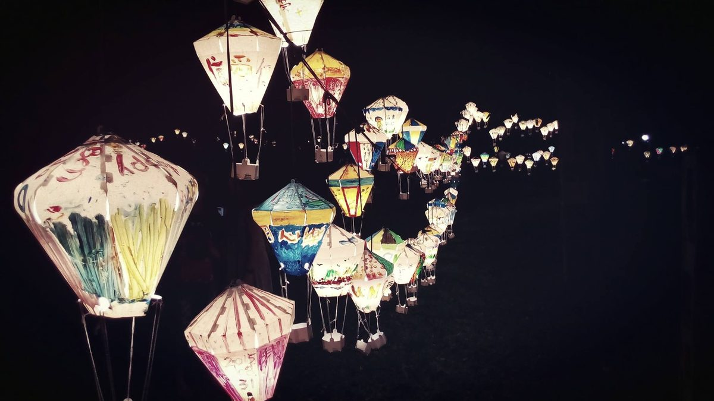

元宵劫
2018-01-04

媽，湯圓好了嗎？
〈元宵劫〉
二月的夜風還是刮臉，阿裕拿著折價的芝麻湯圓要當晚餐。
這天，聽說原值班的人出了點意外，主委臨時通電話，他才來代值夜班。走往辦公大樓的路上，隔巷的里長辦公室，傳來孩童的高聲嬉鬧。
啊，原來是在發小雞燈籠，手作的彩紙有些陽春，鏤空的圓肚一閃一閃，彷若手術室外的警示燈。
媽腦中風的那晚，正和老友去逛元宵燈會，主燈秀也不過十分鐘，但就這樣錯過急診來電。
從側門走入大廈，熟練地在門板上簽到，進入值班室，前班的人見有人接班，點頭招呼完，戴上帽便匆匆離去。
他在儲藏室的櫃底，拿出舊式的瓦斯卡式爐。摸著冰涼的鐵罐，想起有次兩人夜消吃火鍋，中途沒了瓦斯，老媽便叫他出門買。
寒風中，騎車找要半小時，才看到間沒休息的店。
現在呢，老媽走了，也再沒人會使喚他。
提著公共鍋子和卡式爐回值班室，「啪達」三次終於將火點著，鍋面逐漸浮起滾泡，開了包裝袋，一股腦全丟下去。
過會兒，他彷彿聽見老媽在旁吼著：「拿湯匙推湯圓啊，沾鍋就要破了。」猶豫幾秒，阿裕還是決定起身，要去找個湯匙來。
才剛開了門，身後的卡式爐突然迸裂，沸騰的爐水撒落滿地，湯圓黏糊成團，一顆顆芝麻內餡在地上畫出條坑坑疤疤的路。
新的劫日又將到來，
故事柑仔店
與你相約每個過劫時刻。